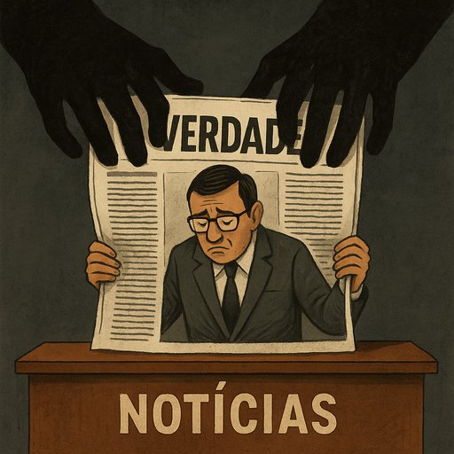

Publicado em 2025-06-17 16:45:10
“Esta ação de Israel pode paradoxalmente levar o Irão pelo caminho das armas nucleares.”
— Rui Cardoso, Expresso, 2025
Há frases que deviam ser impressas em papel de embrulho, não em jornais de referência. A citação acima, saída da pena de um jornalista do Expresso, é um monumento à inversão moral, à ignorância estratégica e à complacência com o mal.
O jornalismo português — sobretudo o que se considera culto, progressista e “de referência” — tornou-se num eco das narrativas do sistema. Um sistema que vive de subtilezas vazias, de análises sem coragem e de um relativismo que já nem tenta disfarçar a sua simpatia pela passividade europeia e pela diplomacia inútil.
Dizer que Israel, ao destruir bases e estruturas militares do Irão — que patrocinam terroristas em três continentes — poderá "empurrar o Irão para a bomba atómica" é como dizer que prender um criminoso poderá levá-lo a cometer mais crimes. É um raciocínio circular, perigoso, e próprio de quem prefere ficar nas bancadas morais, enquanto os poucos ainda corajosos travam o verdadeiro combate.
Israel não provocou o Irão. Israel respondeu à ameaça existencial de um regime teocrático que, com aliados como a Rússia e a Coreia do Norte, tem vindo a criar uma teia global de destruição e fanatismo.
O Expresso não está sozinho. Ele é apenas o reflexo polido do pensamento preguiçoso que domina redações e universidades, onde muitos jornalistas preferem repetir chavões do politicamente correto do que assumir posições baseadas em factos e coragem.
Quando Israel age com precisão cirúrgica para impedir que o Irão tenha armas nucleares, esses “comentadores do sofá” apressam-se a invocar “consequências imprevistas”, “desequilíbrios geopolíticos” e outras balelas que mais parecem notas de rodapé de manuais ultrapassados de Relações Internacionais.
Mas a verdade é esta:
O Irão quer a bomba há décadas.
A Europa virou a cara.
Os EUA hesitam.
E só Israel teve coragem de agir.
É mais cómodo pintar Israel como o provocador do que encarar o Irão como o promotor de guerras por procuração, o opressor das suas mulheres, o carrasco dos seus dissidentes, e o fornecedor oficial de drones assassinos à Rússia.
É mais fácil criticar quem age do que explicar porque se falhou durante décadas em travar o regime dos aiatolas.
E é mais lucrativo para os jornais do sistema dançar com a ambiguidade do que enfrentar o peso da verdade.
No fundo, estes jornalistas não escrevem para informar. Escrevem para manter o povo distraído, para parecerem ponderados, para continuar a servir o poder. São bobos tristes de um circo de papel.
Artigo da autoria de Augustus Veritas Lumen para o blogue Fragmentos do Caos
“No Expresso, o jornal do regime por excelência, já não se faz jornalismo — faz-se encenação. Os seus cronistas são malabaristas da linguagem, mestres do eufemismo, especialistas em parecer críticos sem nunca beliscar o poder real. Servem a narrativa, não a verdade. Informam pouco, iludem muito. E assim alimentam a máquina do entorpecimento coletivo, transformando o povo num rebanho obediente ao som das suas palavras polidas e vazias.”